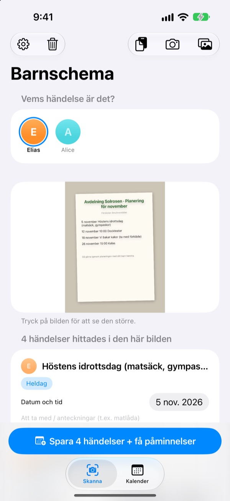
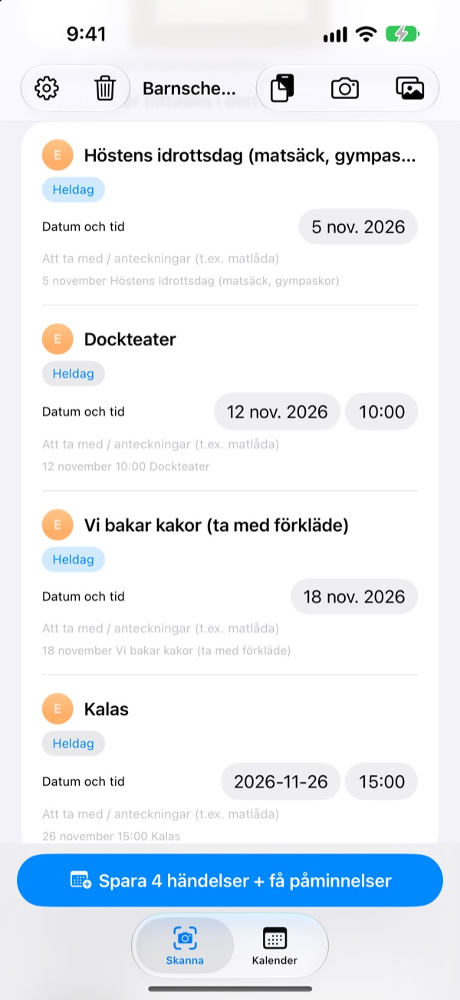
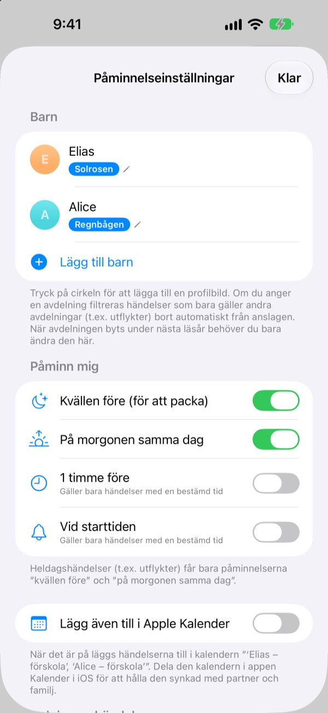
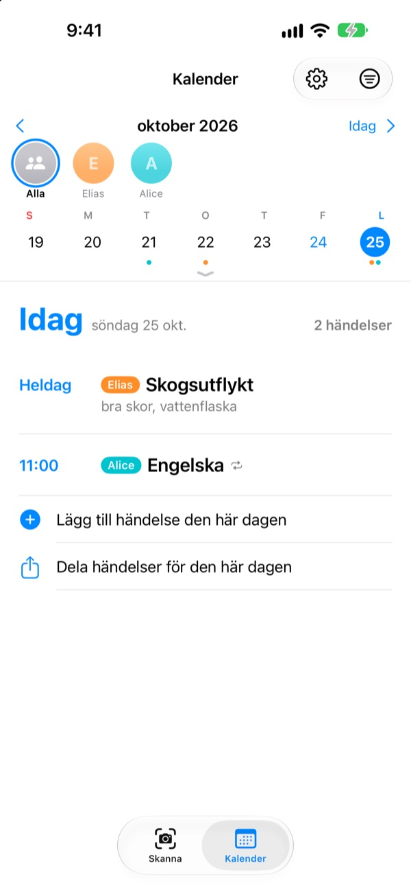

Fota bara lappen.
Vi påminner kvällen före.
Ta en bild på månadsplanen du får med hem från förskolan. Barnschema läser datum, tider och namn på aktiviteterna och lägger in allt på en gång. Kvällen före utflykten, klockan 20, kommer påminnelsen: glöm inte matsäcken.
Alla funktioner är gratis. Bilderna lämnar aldrig din iPhone.

Fota en lapp
Här är en exempellapp med nästa månads aktiviteter. Ta en bild, så plockas aktiviteter och packlista ut precis som i appen, och påminnelserna schemaläggs till de tider du väljer.
Skriver du fortfarande av förskolans lappar i kalendern?
Fem, sex aktiviteter i månaden, och varje gång ska något annat med: matsäck, gympakläder, förkläde. Planen på kylskåpet syns inte på väg till jobbet, och man kommer alltid på det samma morgon. Barnschema gör den papperslappen till kalenderhändelser och påminnelser.
En bild, hela månaden
Månadsschema, föräldrabrev eller enstaka anslag: ta en bild eller välj från bildbiblioteket, så läses datum, tider och aktiviteter åt dig. Du kan också klistra in ett meddelande från förskolan; ord som ”i morgon” och ”på fredag” blir riktiga datum.
Innan du sparar rättar du titel, datum eller packlista direkt och sveper bort det som inte behövs. Fyll i barnets avdelning, så sorteras aktiviteter bara för andra avdelningar bort.

Kvällen före får du veta
Välj mellan kl. 20 kvällen före, kl. 7.30 samma morgon, 1 timme före eller precis på tiden. Packlistan står i påminnelsen, så väskan blir packad.
Med Apple Kalender hamnar händelserna i en kalender med barnets namn, och inget läggs in två gånger.

Flera barn och hela familjen
Varje barn får en egen färg. Se alla tillsammans eller ett i taget, och utifrån tidigare händelser gissar appen vem en ny lapp gäller.
Skicka en inbjudningslänk, så kan partner, mor- och farföräldrar eller barnvakt se och ändra samma händelser. En widget på hemskärmen visar vad som är på gång.

Kom igång i tre steg
- 1
Lägg till barnet
Namn och avdelning. Profilbild kan du lägga till när du vill.
- 2
Fota lappen
Rakt framifrån och med skarp text läses den bäst.
- 3
Kolla och spara
Tillåt notiser, så kommer påminnelserna när du har valt.
När kommer påminnelserna
- Kl. 20.00 kvällen före
- För packningen. På från början
- Kl. 7.30 samma morgon
- Dagens program. På från början
- 1 timme före
- Bara för aktiviteter med tid
- Vid starttiden
- Bara för aktiviteter med tid
Heldagsaktiviteter som en utflykt får bara påminnelsen kvällen före och samma morgon. Du kan slå på eller av var och en i inställningarna när du vill.
Alla funktioner är gratis
Gratis
- Aktiviteter lästa från bilder och meddelanden
- Rätta innan du sparar, sortera bort andra avdelningar
- Påminnelser kvällen före, på morgonen, 1 timme före och i tid
- En färg per barn och en gemensam kalender
- Synkning med Apple Kalender
- Delning med familjen via länk
- Widget på hemskärmen
Stöd utvecklaren
- I inställningarna kan du ge lite dricks, så mycket du vill
- Dricks låser inte upp något. Appen fungerar likadant utan
Inga annonser, ingen prenumeration.
Vanliga frågor
Vilka bilder fungerar?
Månadsplaner i rutnät, föräldrabrev skrivna som löptext och enstaka lappar eller flygblad. En bild tagen rakt framifrån med skarp text läses bäst. Du kan också välja flera bilder och skanna dem samtidigt.
Några aktiviteter saknas eller en titel har ett stavfel.
Handstil eller blek text kan vara svår att läsa. Rätta titel, datum eller packlista direkt i listan, eller svep bort det du inte behöver. En aktivitet som saknas lägger du till med ”Lägg till händelse manuellt” på fliken Skanna och sparar igen.
Jag får inga påminnelser.
Kontrollera under Inställningar > Notiser > Barnschema att notiser är tillåtna. I appens inställningar (⚙️) väljer du också vilka påminnelser du vill få.
Aktiviteter från andra avdelningar kommer med.
Fyll i namnet på barnets avdelning i inställningarna, så sorteras aktiviteter bara för andra avdelningar bort. Byter barnet avdelning ändrar du det bara där.
Jag har flera barn.
I inställningarna lägger du till så många barn du vill, vart och ett med profilbild. Välj vid skanningen vem aktiviteterna gäller: i kalendern har varje barn sin färg, och du kan växla mellan gemensam vy och filter per barn.
Hur delar jag schemat med min partner?
Gå till ”Delning av händelser” i inställningarna, tryck på ”Bjud in till delning” och skicka länken i ett meddelande. Den inbjudna ser och ändrar alla barn och händelser, och ändringar från båda håll syns direkt hos båda. Det har inget med Apples Familjedelning att göra.
Går det att dela på andra sätt?
Med dela-knappen på fliken Kalender skickar du en Barnschema-fil, en kalenderfil (.ics) eller en textsammanfattning. Med ”Lägg även till i Apple Kalender” skapas en kalender med barnets namn; delar du den via iCloud i appen Kalender hänger familjen också med.
Skickas mina bilder eller händelser någonstans?
Nej. Texten på bilderna läses helt på enheten, och data sparas bara där. Händelser går via din iCloud bara om du bjuder in någon med ”Delning av händelser”, och bara till dem du bjudit in.
Problem eller önskemål? Skriv till leeo@kakao.com. Vi svarar oftast inom 2–3 dagar. Ange gärna enhetsmodell och iOS-version.